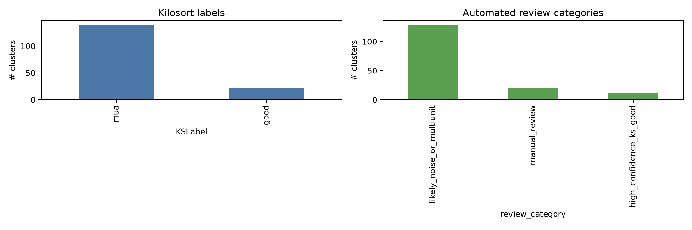
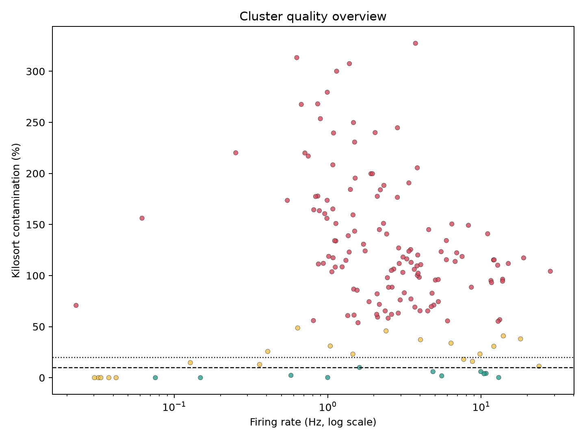

This is an automated pre-curation report. It does not replace Phy review.
cluster_quality_summary.csv | phy_review_priority.csv | cluster_quality_summary.json


| review_priority | cluster_id | review_category | KSLabel | ContamPct | Amplitude | spike_count | firing_rate_hz | isi_violation_fraction | best_raw_channel | best_channel_shank | best_on_off_condition | best_on_off_delta_hz | n_conditions_q05 |
|---|---|---|---|---|---|---|---|---|---|---|---|---|---|
| 1 | 0 | high_confidence_ks_good | good | 5.9 | 10.1 | 88023 | 4.854 | 0.0007157 | 1 | 1 | NaN | 0 | |
| 2 | 45 | manual_review | good | 0 | 61.4 | 582 | 0.03209 | 0 | 11 | 1 | NaN | 0 | |
| 3 | 46 | manual_review | good | 0 | 42.4 | 680 | 0.0375 | 0 | 11 | 1 | NaN | 0 | |
| 4 | 47 | manual_review | good | 0 | 60 | 548 | 0.03022 | 0 | 11 | 1 | NaN | 0 | |
| 5 | 73 | manual_review | good | 0 | 31.9 | 758 | 0.0418 | 0 | 15 | 1 | NaN | 0 | |
| 6 | 78 | high_confidence_ks_good | good | 2.3 | 46.7 | 10453 | 0.5764 | 0.0009568 | 15 | 1 | NaN | 0 | |
| 7 | 82 | high_confidence_ks_good | good | 1.8 | 8.9 | 100350 | 5.533 | 0.0004086 | 113 | 4 | NaN | 0 | |
| 8 | 86 | high_confidence_ks_good | good | 10 | 14.6 | 29234 | 1.612 | 0.00236 | 81 | 3 | NaN | 0 | |
| 9 | 87 | manual_review | good | 11.2 | 11.5 | 432101 | 23.83 | 0.01023 | 81 | 3 | NaN | 0 | |
| 10 | 90 | high_confidence_ks_good | good | 4.2 | 17 | 195198 | 10.76 | 0.0008299 | 115 | 4 | NaN | 0 | |
| 11 | 104 | manual_review | good | 16 | 17.2 | 159259 | 8.782 | 0.007535 | 84 | 3 | NaN | 0 | |
| 12 | 108 | manual_review | good | 0 | 42.5 | 603 | 0.03325 | 0 | 86 | 3 | NaN | 0 | |
| 13 | 109 | high_confidence_ks_good | good | 0 | 16.3 | 2688 | 0.1482 | 0 | 119 | 4 | NaN | 0 | |
| 14 | 112 | manual_review | good | 14.7 | 37.1 | 2310 | 0.1274 | 0.002165 | 86 | 3 | NaN | 0 | |
| 15 | 113 | high_confidence_ks_good | good | 0.2 | 25.5 | 18131 | 0.9997 | 0.0003309 | 119 | 4 | NaN | 0 | |
| 16 | 126 | high_confidence_ks_good | good | 0.2 | 29.2 | 235905 | 13.01 | 0.0003137 | 120 | 4 | NaN | 0 | |
| 17 | 130 | high_confidence_ks_good | good | 0 | 37.6 | 1367 | 0.07538 | 0 | 122 | 4 | NaN | 0 | |
| 18 | 131 | manual_review | good | 12.9 | 40.9 | 6527 | 0.3599 | 0.002758 | 122 | 4 | NaN | 0 | |
| 19 | 135 | manual_review | good | 18 | 13.2 | 139512 | 7.693 | 0.006157 | 122 | 4 | NaN | 0 | |
| 20 | 137 | high_confidence_ks_good | good | 3.9 | 23.1 | 189446 | 10.45 | 0.001721 | 123 | 4 | NaN | 0 | |
| 21 | 149 | high_confidence_ks_good | good | 6 | 13.3 | 180389 | 9.947 | 0.002583 | 124 | 4 | NaN | 0 | |
| 22 | 11 | manual_review | mua | 38 | 9.6 | 327648 | 18.07 | 0.01941 | 98 | 4 | NaN | 0 | |
| 23 | 48 | manual_review | mua | 30.7 | 11.8 | 219239 | 12.09 | 0.01255 | 10 | 1 | NaN | 0 | |
| 24 | 59 | manual_review | mua | 37.2 | 11.2 | 72978 | 4.024 | 0.007221 | 12 | 1 | NaN | 0 | |
| 25 | 66 | manual_review | mua | 31 | 12.1 | 18854 | 1.04 | 0.002864 | 12 | 1 | NaN | 0 | |
| 26 | 83 | manual_review | mua | 40.9 | 10.4 | 253011 | 13.95 | 0.02837 | 81 | 3 | NaN | 0 | |
| 27 | 125 | manual_review | mua | 23.1 | 12.2 | 26456 | 1.459 | 0.003289 | 120 | 4 | NaN | 0 | |
| 28 | 127 | manual_review | mua | 33.8 | 10.6 | 115376 | 6.362 | 0.008763 | 122 | 4 | NaN | 0 | |
| 29 | 129 | manual_review | mua | 25.7 | 12.5 | 7380 | 0.4069 | 0.004337 | 123 | 4 | NaN | 0 | |
| 30 | 133 | manual_review | mua | 48.7 | 25 | 11558 | 0.6373 | 0.01012 | 122 | 4 | NaN | 0 | |
| 31 | 139 | manual_review | mua | 23.2 | 9.9 | 178136 | 9.822 | 0.006012 | 58 | 2 | NaN | 0 | |
| 32 | 150 | manual_review | mua | 45.8 | 13.3 | 43544 | 2.401 | 0.008337 | 124 | 4 | NaN | 0 | |
| 33 | 1 | likely_noise_or_multiunit | mua | 76.1 | 9.7 | 53813 | 2.967 | 0.008846 | 64 | 3 | NaN | 0 | |
| 34 | 2 | likely_noise_or_multiunit | mua | 95.6 | 9.7 | 91255 | 5.032 | 0.01528 | 65 | 3 | NaN | 0 | |
| 35 | 3 | likely_noise_or_multiunit | mua | 108.3 | 9.4 | 20320 | 1.12 | 0.002904 | 33 | 2 | NaN | 0 | |
| 36 | 4 | likely_noise_or_multiunit | mua | 177.8 | 9.3 | 15633 | 0.862 | 0.00531 | 33 | 2 | NaN | 0 | |
| 37 | 5 | likely_noise_or_multiunit | mua | 145 | 11.5 | 39391 | 2.172 | 0.2283 | 0 | 1 | NaN | 0 | |
| 38 | 6 | likely_noise_or_multiunit | mua | 65.5 | 9.9 | 72442 | 3.994 | 0.008476 | 32 | 2 | NaN | 0 | |
| 39 | 7 | likely_noise_or_multiunit | mua | 82.7 | 10 | 86809 | 4.787 | 0.01378 | 65 | 3 | NaN | 0 | |
| 40 | 8 | likely_noise_or_multiunit | mua | 118.7 | 10.3 | 136230 | 7.512 | 0.02663 | 96 | 4 | NaN | 0 | |
| 41 | 9 | likely_noise_or_multiunit | mua | 134.3 | 10.4 | 107562 | 5.931 | 0.022 | 97 | 4 | NaN | 0 | |
| 42 | 10 | likely_noise_or_multiunit | mua | 70.8 | 10.5 | 416 | 0.02294 | 0.1181 | 2 | 1 | NaN | 0 | |
| 43 | 12 | likely_noise_or_multiunit | mua | 122.3 | 10.9 | 125656 | 6.929 | 0.02386 | 98 | 4 | NaN | 0 | |
| 44 | 13 | likely_noise_or_multiunit | mua | 59.3 | 9.5 | 38328 | 2.113 | 0.004096 | 34 | 2 | NaN | 0 | |
| 45 | 14 | likely_noise_or_multiunit | mua | 88.6 | 9.6 | 47627 | 2.626 | 0.006824 | 66 | 3 | NaN | 0 | |
| 46 | 15 | likely_noise_or_multiunit | mua | 133.9 | 9.2 | 20496 | 1.13 | 0.006294 | 3 | 1 | NaN | 0 | |
| 47 | 16 | likely_noise_or_multiunit | mua | 86.7 | 9.4 | 26778 | 1.477 | 0.004108 | 34 | 2 | NaN | 0 | |
| 48 | 17 | likely_noise_or_multiunit | mua | 176.6 | 9.7 | 51611 | 2.846 | 0.01469 | 66 | 3 | NaN | 0 | |
| 49 | 18 | likely_noise_or_multiunit | mua | 134.1 | 9.5 | 20144 | 1.111 | 0.01062 | 3 | 1 | NaN | 0 | |
| 50 | 19 | likely_noise_or_multiunit | mua | 151.1 | 9.7 | 41891 | 2.31 | 0.01062 | 5 | 1 | NaN | 0 | |
| 51 | 20 | likely_noise_or_multiunit | mua | 58.3 | 9.9 | 44923 | 2.477 | 0.007324 | 101 | 4 | NaN | 0 | |
| 52 | 21 | likely_noise_or_multiunit | mua | 164.4 | 9.1 | 14721 | 0.8117 | 0.004484 | 36 | 2 | NaN | 0 | |
| 53 | 22 | likely_noise_or_multiunit | mua | 71.8 | 10 | 39364 | 2.171 | 0.007672 | 101 | 4 | NaN | 0 | |
| 54 | 23 | likely_noise_or_multiunit | mua | 220 | 9.1 | 12881 | 0.7103 | 0.005512 | 37 | 2 | NaN | 0 | |
| 55 | 24 | likely_noise_or_multiunit | mua | 188.3 | 9.6 | 42143 | 2.324 | 0.01234 | 5 | 1 | NaN | 0 | |
| 56 | 25 | likely_noise_or_multiunit | mua | 106.4 | 10.9 | 48872 | 2.695 | 0.007141 | 101 | 4 | NaN | 0 | |
| 57 | 26 | likely_noise_or_multiunit | mua | 125.5 | 12.1 | 62952 | 3.471 | 0.138 | 69 | 3 | NaN | 0 | |
| 58 | 27 | likely_noise_or_multiunit | mua | 98.3 | 12.5 | 71609 | 3.949 | 0.1207 | 69 | 3 | NaN | 0 | |
| 59 | 28 | likely_noise_or_multiunit | mua | 62 | 9.7 | 37826 | 2.086 | 0.007244 | 103 | 4 | NaN | 0 | |
| 60 | 29 | likely_noise_or_multiunit | mua | 190.7 | 9.9 | 61321 | 3.381 | 0.02299 | 7 | 1 | NaN | 0 |